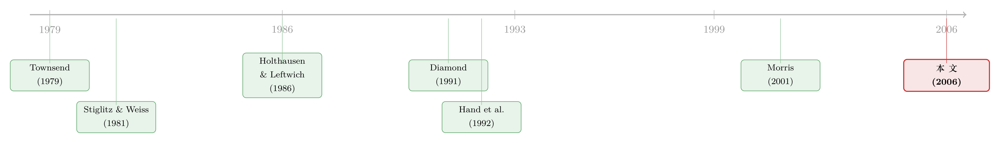

评级的真正力量，不在「说真话」，而在「让大家信同一句话」
本文读的是 Boot, Milbourn & Schmeits (2006, Review of Financial Studies)：信用评级之所以有价值，未必因为它比市场更「懂」一家公司，而是因为它能在一个本可以有好坏两种结局的世界里，替所有人钉死那个「好结局」。评级是一个 焦点 (focal point)——它协调的不是信息，而是信念。
1 一个尴尬的事实
先说一件让评级机构有点下不来台的事。
在金融经济学的主流教科书里，信用评级 (credit rating) 的地位其实相当微妙。Brealey 和 Myers 那本人手一册的《Principles of Corporate Finance》干脆写道：公司和政府「几乎肯定夸大了评级机构的影响力，因为这些机构与其说在引领投资者意见，不如说在追随它」(p. 685)。这话说得很重——它等于在说：评级机构不过是个慢半拍的复读机，市场早就知道的事，它再盖个章而已。
实证文献也不太给面子。一边是大量研究发现「降级」会砸出显著的负向股价反应，另一边是「升级」却几乎激不起水花；评级到底有没有信息含量，吵了几十年也没个定论。于是一个尴尬的局面出现了：评级在实践中明明越来越重要——巴塞尔资本监管要用它、结构化金融的爆发离不开它、养老金的投资指引里白纸黑字写着它——可在理论上，我们却说不清它凭什么重要。
这就是本文要补的那个洞。作者们的出发点很「轴」：在搞清楚评级到底在市场里扮演什么角色之前，那些「评级有没有用」的实证争论，其实是无源之水。 他们想做的，是给评级找一个此前被完全忽略的「存在理由」(raison d'être)。
而他们给出的答案，乍一听有点反直觉：评级的价值，主要不来自它告诉了你什么新信息，而来自它让一群人同时相信同一件事。
2 多重均衡：好公司也会被「想坏」
要理解这个答案，得先看清楚问题长什么样。论文搭了一个极简的模型，但它戳中的痛点非常真实。
设想一家公司要从市场上融 $1 来投项目。它手上有两个选择：一个是稳健的 可行项目 (viable project, VP)，低风险；另一个是 高风险替代项目 (high-risk alternative, HR)。两个项目的净现值都是正的，但稳健项目更好，NPV(VP) > NPV(HR)。从社会角度看，公司当然应该选 VP——模型甚至假设 p_B X_{VP} > q X_{HR} > 1，也就是说，即使信用质量已经恶化，投 VP 仍然是「第一优先」(first-best) 的有效选择。
可问题在于：投资者看不见公司私下到底选了哪个项目。他们能做的，只有根据自己的「猜测」来给贷款定价。
这就埋下了一颗雷。市场是完全竞争的、投资者零期望利润，于是还款额由信念决定：
- 如果市场猜公司会选稳健项目 VP，要求的还款额是 \(F_{VP}(\tilde p)=\dfrac{1}{\tilde p}\)；
- 如果市场猜公司会选高风险项目 HR，要求的还款额是 \(F_{HR}=\dfrac{1}{q}\)。
这里 \(\tilde p\) 是公司的信用质量（VP 成功的概率），\(q\) 是 HR 成功的概率，而且 \(\tilde p > q\)，所以 \(F_{HR} > F_{VP}\)——猜你坏，就要你还得更多。
接着，一个自然的问题是：公司面对这两种报价，会怎么反应？答案让人脊背发凉。市场的信念会自我实现 (self-fulfilling)。 如果市场认定你要乱来，就给你开一个高利率；而背着这么高的融资成本，稳健项目那点利润根本不够还，于是公司被「逼」到墙角，干脆真的去赌那个高风险项目——市场的恶意预言，成真了。反过来，如果市场相信你稳健，给你低利率，你也就乐得选稳健项目。
于是模型给出了它的第一块基石。
3 模型：三个区域与一道临界线
3.1 信用质量决定命运——但中间那段是「悬空」的
论文用 Theorem 1 把公司的处境切成了三段，全看信用质量 \(\tilde p\) 落在哪里：
$$ \text{区域 1：} \quad \tilde p < \underline{p} \;\Rightarrow\; \text{永远选 HR（无论市场怎么想）} $$ $$ \text{区域 2：} \quad \underline{p} \le \tilde p < \bar{p} \;\Rightarrow\; \text{市场猜什么，公司就选什么（多重均衡）} $$ $$ \text{区域 3：} \quad \tilde p \ge \bar{p} \;\Rightarrow\; \text{永远选 VP（无论市场怎么想）} $$
两头都好办：信用太差（区域 1），资产替代 (asset substitution) 的道德风险太严重，公司铁了心要赌，谁也拦不住；信用足够好（区域 3），稳健项目实在太香，公司怎么都不会乱来。
真正的麻烦在中间。 区域 2 里的「中等质量」公司，命运完全悬在市场的一念之间：稳健项目明明既是第一优先、又完全可行，可只要投资者集体往坏处想，公司就会被推向那个谁都不愿看到的坏均衡。这不是公司不行，而是信念协调失败。
论文接下来的全部火力，都集中在这个区域 2。
3.2 关键一步：不需要「所有人」相信，只要「足够多人」相信
但真正关键的一步在于第三节的一个推广。作者问：如果不是所有投资者步调一致，而是只有一部分人相信公司会选稳健项目，会怎样？
设 \(\lambda \in [0,1]\) 是「相信公司选 VP」的那部分投资者比例，剩下 \((1-\lambda)\) 的人各自瞎猜、但知道那 \(\lambda\) 群人的存在。公司把债权拆成两份卖给两类人，证券完全相同：相信 VP 的人按 \(F_{VP}\) 出价，剩下的人按 \(F_{HR}\) 出价。于是公司实际背上的总还款额，是一个加权平均：
这个式子有一个朴素却致命的性质：\(\dfrac{\partial F^{\lambda}}{\partial \lambda} < 0\)。相信好结局的人越多，公司的融资成本就越低。
然后逻辑就像多米诺骨牌一样倒下去了。公司会比较两个项目的期望净收益：选 HR 得到 \(q\,(X_{HR}-F^{\lambda})\)，选 VP 得到 \(\tilde p\,(X_{VP}-F^{\lambda})\)。当相信 VP 的比例 \(\lambda\) 够大、融资成本 \(F^{\lambda}\) 够低时，稳健项目就重新变得划算——哪怕剩下那 \((1-\lambda)\) 个人还在唱衰，公司也会选 VP。
这就是 Theorem 2：
对每一个区域 2 里的公司，都存在一个临界比例 \(\lambda^{*}=\lambda^{*}(\tilde p)\)。只要相信稳健项目的投资者比例 \(\lambda > \lambda^{*}\)，公司就一定选 VP。而一旦公司必选 VP，剩下那 \((1-\lambda)\) 个人也会理性地回过味来、跟着相信 VP。于是全市场的融资成本统一收敛到 \(F_{VP}\)。
换句话说：你不需要说服每一个人，你只需要让一群「带头相信」的人多到越过临界线，剩下的人会出于自身利益自动归队。坏均衡，就这样被一小撮坚定的乐观者撬掉了。
紧接着的推论 (Corollary) 给出了最后一块拼图：\(\lambda^{*}\) 随信用质量 \(\tilde p\) 递减。公司底子越好，需要「带头相信」的人就越少；公司一旦质量下滑，就需要更大比例的人坚定站队，才能拦住它滑向高风险项目。这个比较静态，后面会变成一组很漂亮的实证预测。
4 于是，评级登场了
讲到这里，模型其实还没提一个字的「评级」。但舞台已经搭好了——缺的，正是那个能把一群投资者的信念钉在同一个点上的东西。
这就是评级的角色。作者说，评级是一个 焦点 (focal point)：当一份评级公布，一部分受规则约束的投资者（典型如养老金）会直接照着它行动。这种「照着评级行动」不是因为评级一定更聪明，而是因为制度逼着他们这么做。早在 1936 年，美国的监管就禁止各类金融机构持有投机级债券；1989 年的法案禁止储贷机构投资投资级以下的债券；货币市场基金被《1940 年投资公司法》Rule 2a-7 限制持有低评级债券，最低门槛被定在 A+(A1)；欧洲债券市场甚至要求债券上市前必须先有一个最低评级。
这些「制度刚性」(institutional rigidities) 看似笨拙，却恰恰提供了模型里那群「带头相信」的 \(\lambda\) 投资者。一旦有足够多被制度绑定的钱跟着评级走，越过了 \(\lambda^{*}\)，剩下完全自由的投资者就会理性地跟上。 评级于是成了那根撬动均衡的杠杆——它本身不创造信息，却协调了信念，把市场从可能的坏均衡里拽了出来。作者甚至说，从这个意义上看，评级简直是一份「对抗坏均衡的保险单」。
这是全文的核心，也是它最漂亮的地方：评级的价值，被重新定义成了一种协调价值，而非信息价值。
这正好回应了开头那个尴尬。如果评级主要是个「协调器」而非「信息源」，那么实证上它的信息含量时有时无、众说纷纭，就一点都不奇怪了——你本来就不该指望从「焦点」里读出多少新信息。本文把一桩看似打脸评级的实证乱象，反过来变成了支持自己理论的证据。
5 被忽略的「信用观察」：一份隐性契约
如果故事到此为止，评级还只是个被动的协调标志。但本文还挖出了第二个、此前几乎被文献完全忽略的制度细节——信用观察 (credit watch) 程序。
评级机构的工作，不只是一次性地公布评级然后撒手。当市场或公司基本面恶化、威胁到评级时，机构会把公司「放上观察名单」，启动一个监督机制。而这，作者论证，本质上是评级机构 (credit rating agency, CRA) 与公司之间的一份隐性契约 (implicit contract)：公司隐性地承诺去做出某种 挽救努力 (recovery effort)，来阻止信用状况进一步下滑；评级机构则给它一段时间去兑现承诺，再决定是否真的调整评级。
模型把这步形式化了：信用质量恶化到 \(p_B\) 的公司，可以付出一笔代价高昂的努力 \(e\)，以概率 \(\theta\) 把质量重新拉回 \(p_0\)。而这份隐性契约之所以激励相容 (incentive compatible)，恰恰要靠前面那个机制兜底——因为机构投资者会把投资决策挂钩在评级上，这给了契约以「牙齿」：公司若不努力、评级被下调，它就会被一大群受制度约束的钱抛弃。监督的「监督」二字，落到了实处。
这一层，让评级从一个静态标签，变成了一个动态的、有奖惩的关系。也正是这一层，催生了本文最值得检验的那批预测。
6 把理论翻译成可证伪的预测
一个好的理论，得敢于说出「能被数据打脸」的话。本文这一节给得相当慷慨。
第一，升降级的不对称。 那个困扰文献已久的现象——股价对降级反应强烈、对升级却近乎无动于衷——在本文里是模型的自然推论，而不是需要额外解释的异象。直觉上，升级往往只是确认了市场已在好均衡里的状态，信息增量小；降级却可能把公司推过临界线、触发坏均衡，杀伤力自然不对称。
第二，也是最锋利的一条：评级的信息含量，主要绑定在信用观察程序上。 作者预言，经过信用观察之后才发生的评级变动，会比没有观察程序时更具信息量。更细的预测是：对那些「挽救努力最可能奏效」的公司，坏消息初次释放时股价只会小跌，随后若在信用观察后获得评级确认，市场只有一个小而正的反应；但同样这批公司，如果在信用观察后被下调，股价反应会又大又负。预测把信用观察程序与评级变动的价格反应，直接焊死在了一起，给出了一组比「评级有没有用」尖锐得多的检验。
第三，关于「谁会被放上观察名单」。 模型预测，一家公司在信用恶化后被放上信用观察的概率，是挽救努力有效性的非单调 (nonmonotonic) 函数，并且还取决于公司的初始信用质量。这种非单调性，本身就是一个很难「事后编」出来的、可供证伪的硬预测。
7 文献脉络
把这篇论文放回它的坐标系里看，会更清楚它「补」的是哪一块。
故事的根，扎在 Stiglitz & Weiss (1981) 的信贷配给上——他们让我们看到，信息不对称下的信贷市场会内生出种种扭曲，资产替代的道德风险也由此而来。但他们是单一债权人视角，天然排除了「多个投资者之间如何协调信念」这件事。本文恰恰把镜头拉到了投资者群体的协调上，于是 Stiglitz-Weiss 式的资产替代问题，第一次长出了「多重均衡」这条新枝。债务契约本身的最优性，则站在 Townsend (1979)、Gale & Hellwig (1985) 的代价高昂状态验证，以及 Diamond (1991) 的监督与声誉之上——后者尤其重要，因为本文的信用观察隐性契约，骨子里就是一种监督关系。

另一条线，是评级的实证传统。Holthausen & Leftwich (1986) 与 Hand, Holthausen & Leftwich (1992) 记录了评级变动的股价反应及其升降级不对称，Kliger & Sarig (2000) 则试图分离评级的信息价值。这些工作积累了大量「现象」，却始终缺一个能把现象串起来的理论骨架——这正是 Cantor (2004) 在《Journal of Banking and Finance》评级专刊社论里点名的遗憾：评级研究几乎全是实证、缺乏理论。
而本文真正的「邻居」，在第三条线上：协调与 廉价磋商 (cheap talk) 的博弈论文献，Spatt & Srivastava (1991) 与 Morris (2001)。它们的洞见是——一个信号之所以有价值，仅仅因为有人选择把它当真。本文把这个抽象洞见，安到了信用市场这个无比具体的制度场景里：评级之所以能当焦点，正因为有一批被制度绑定的投资者「选择把它当真」，从而改变融资成本、进而改变公司行为、最终反过来印证了评级本身。这是一个自洽的闭环，也是这篇论文在脉络中的位置：它给评级提供了一个此前缺失的、博弈论意义上的存在理由。
（关于评级如何「看穿」市场噪声的实证一面，可参见《当价格在说谎：评级机构凭什么「看穿」市场的噪声》；关于「谁付钱」是否扭曲评级的监管争论，可参见《评级注水，错的真是「谁付钱」吗？》；至于评级与股票流动性之间的暗线，则见《评级藏在买卖价差里》。）
8 评论与延伸（Q&A + 研究方向）
(a) 几个可能的疑问
Q：「焦点」和「信息」到底有什么区别？评级公布的那一刻，难道不也是在传递信息吗？
区别在因果方向。信息观说：评级揭示了公司的真实质量，价格因此调整。焦点观说：评级未必含有市场不知道的新信息，它的作用是把分散的信念协调到同一个均衡上。本文的妙处是，焦点价值不依赖评级「更聪明」——只要有一群被制度绑定的投资者照它行动，越过临界比例 \(\lambda^{*}\)，其余理性投资者就会跟上。评级是在「选均衡」，不是在「报数据」。
Q：那个「带头相信」的 \(\lambda\) 投资者，模型是直接假设出来的——这会不会是循环论证？评级有用，是因为我先假设了有人信评级？
这是本文最该被追问的地方，作者也很诚实。\(\lambda\) 投资者的存在不是凭空假设，而是被制度刚性外生地撑住的：养老金指引、Rule 2a-7、欧债上市门槛、1936 年以来的监管禁令，都强制一部分钱必须按评级行事。所以本文并非「假设评级有用」，而是「给定这些真实存在的制度约束，评级会内生地获得协调价值」。评级的力量，是制度借给它的。
Q：升级反应弱、降级反应强，难道不能用别的故事解释（比如经理人择时、坏消息更受关注）？
能，这正是识别上的软肋——不对称本身并不能单独把本文挑出来。本文真正的「指纹」式预测，是把不对称绑定到信用观察程序上：经过信用观察的评级变动信息量更大，且对「挽救努力最可能奏效」的公司，确认是小正反应、下调是大负反应。这组带交互项的预测，才是能把焦点理论和竞争性解释分开的地方。
Q：如果评级机构本身有私心（比如向发行人收费而偏袒发行人），这个故事还成立吗？
本文明确把评级机构的道德风险搁置在外，只解决「评级为何存在」这个前置问题。作者引了 Covitz & Harrison (2003)，后者没找到机构偏袒发行人的证据。但这显然是个未了之事：一旦评级机构会撒谎，它作为「焦点」的可信度就会被侵蚀，隐性契约的牙齿也会松动。这是模型外、却极重要的一层。
Q：评级常被批评是「滞后指标」（安然倒闭前四天还是好评级），焦点理论怎么自处？
本文不直接回应滞后批评，但它的信用观察机制其实给了滞后一个良性解释：机构给公司一段时间去落实挽救努力、再决定是否调级，这种「宽限」天然表现为评级的滞后。当然，这是一个善意的诠释——安然式的失败，究竟是「宽限期」还是「失职」，模型本身分不清。
Q：这套机制是不是天然偏向那些「中等质量」的公司？
是的，而且这是特性而非缺陷。区域 1（太差）和区域 3（够好）的公司，信念无关紧要，评级也就无所谓焦点。评级的协调价值恰恰集中在区域 2 那批命悬一线的中等质量公司身上——它们最容易被坏信念推下悬崖，也最能从一个钉死好均衡的焦点中获益。
(b) 几个可能的研究问题与提案
1. 把「信用观察」当成事件来检验焦点理论。
【经济故事】本文最尖锐的预测——经信用观察后的评级变动信息量更大、且对「挽救努力有效」的公司呈现确认小正、下调大负的不对称——至今缺乏干净的直接检验。这是把焦点理论与竞争解释分开的关键。 【可行性】高。S&P 的 CreditWatch、Moody's 的 Watchlist 都有明确的放入/移出时点，可与 CRSP 股价、TRACE 债券价格做事件研究。难点是构造「挽救努力有效性」的代理变量（如行业可逆性、资产有形性），并处理放入观察名单的内生选择，需配合非单调性预测做交叉验证。
2. 用外资持有人比例，给「\(\lambda\) 投资者」找一个外生变动。
【经济故事】本文的核心可观测含义是：被制度绑定、必须按评级行事的投资者比例 \(\lambda\) 越高，评级的协调价值越大、坏均衡越难发生。外资机构往往受本国评级门槛规则约束，其持有比例的变化提供了 \(\lambda\) 的天然变异。 【可行性】中。可用各国养老金/保险的评级约束强度，结合公司债持有人结构（如 eMAXX、各国托管数据）构造 \(\lambda\) 的代理。识别上需要一个冲击 \(\lambda\) 而不直接冲击基本面的事件——例如某国放宽/收紧机构持有评级门槛的监管改革，做 DiD。数据可得性是主要瓶颈。
3. 信用观察作为「隐性契约」的违约率检验。
【经济故事】若信用观察真是一份隐性契约，那么被放上观察名单后做出可见挽救努力（去杠杆、出售资产、削减投资）的公司，其后续评级确认概率应显著更高，且违约率更低；反之则被下调。这能直接验证契约的激励相容性。 【可行性】高。观察名单时点 + Compustat 的资本结构/投资变量 + 后续评级路径与违约记录均可得。核心是把「挽救努力」操作化为可观测的公司行动，并控制初始信用质量（对应模型里 \(\lambda^{*}\) 随 \(\tilde p\) 递减的比较静态）。
4. 多重均衡的「自我实现」能否在债券一级市场被直接看到？
【经济故事】模型预言：对中等质量公司，同样的基本面、不同的市场信念会导致截然不同的融资成本与项目选择。如果能找到两家基本面高度相似、却因评级/信念差异而落入不同均衡的公司，就能为多重均衡提供罕见的直接证据。 【可行性】中偏低。可借助「分歧评级」(split ratings) 样本——同一发行人被两家机构给出跨投资级/投机级边界的不同评级，近似制造了信念分裂。结合发行利差（本文参考文献中的 split-ratings 文献，如 Billingsley et al. 1985、Cantor, Packer & Cole 1997）可做。难点是把「均衡选择」与单纯的信息差异分开，识别较脆弱。
9 我的判断
先说贡献。这篇论文最大的价值，是把一个我们天天用、却说不清为什么有用的东西，给了一个干净自洽的微观基础。它没有诉诸「评级机构信息更优」这种容易被实证打脸的强假设，而是把评级的力量还原成一种协调价值——只要存在被制度绑定的投资者，评级就能当焦点，钉死好均衡。更难得的是，它顺手挖出了「信用观察」这个被文献忽略的制度细节，并由此长出一组尖锐、可证伪的预测。把开头那桩「实证乱象」反过来变成对自己有利的证据，是理论文章里很高明的一招。
但我对识别有两点不踏实。其一，整个机制的支点是那群「带头相信评级」的 \(\lambda\) 投资者，模型靠制度刚性把他们外生地撑住——这在逻辑上成立，可一旦制度约束本身随评级、随周期内生变化（比如监管在危机中放松评级门槛），焦点的「焦」就可能松动，模型是静态的，接不住这种动态。其二，论文把评级机构自身的道德风险整段搁置；可现实里，评级作为焦点的全部可信度，恰恰系于「它不会系统性撒谎」这个被假设掉的前提——2008 年结构化产品的评级崩塌，正是这个前提失效的惨痛注脚。
后续我最想看到的，是有人真的去检验那条「信用观察」预测。它是本文与所有竞争性解释最不同的地方，却也是被引用、被检验得最少的地方。谁能用 CreditWatch 的时点 + TRACE 的债券价格，把「经观察的评级变动信息量更大」「确认小正、下调大负」这组带交互项的不对称干净地估出来，谁就能给这个二十年前的漂亮理论，补上它最缺的那块实证拼图。
参考文献
Boot, A. W. A., Milbourn, T. T., & Schmeits, A. (2006). Credit Ratings as Coordination Mechanisms. Review of Financial Studies 19(1), 81–118.
Brealey, R., & Myers, S. (2003). Principles of Corporate Finance (7th ed.). Irwin McGraw Hill.
Cantor, R. (2004). An Introduction to Recent Research on Credit Ratings. Journal of Banking and Finance 28, 2565–2573.
Covitz, D., & Harrison, P. (2003). Testing Conflicts of Interest at Bond Rating Agencies with Market Anticipation: Evidence that Reputation Incentives Dominate. Working paper, Federal Reserve Board.
Diamond, D. (1991). Monitoring and Reputation: The Choice between Bank Loans and Directly Placed Debt. Journal of Political Economy 99, 689–721.
Gale, D., & Hellwig, M. (1985). Incentive-Compatible Debt Contracts: The One-Period Problem. Review of Economic Studies 52, 647–663.
Hand, J., Holthausen, R., & Leftwich, R. (1992). The Effect of Bond Rating Agency Announcements on Bond and Stock Prices. Journal of Finance 47, 733–752.
Holthausen, R., & Leftwich, R. (1986). The Effect of Bond Rating Changes on Common Stock Prices. Journal of Financial Economics 17, 57–89.
Kliger, D., & Sarig, O. (2000). The Information Value of Bond Ratings. Journal of Finance 55, 2879–2902.
Morris, S. (2001). Political Correctness. Journal of Political Economy 109, 231–265.
Spatt, C., & Srivastava, S. (1991). Preplay Communication, Participation Restrictions, and Efficiency in Initial Public Offerings. Review of Financial Studies 4, 709–726.
Stiglitz, J., & Weiss, A. (1981). Credit Rationing in Markets with Imperfect Information. American Economic Review 71, 393–410.
Townsend, R. (1979). Optimal Contracts and Competitive Markets with Costly State Verification. Journal of Economic Theory 21, 265–293.